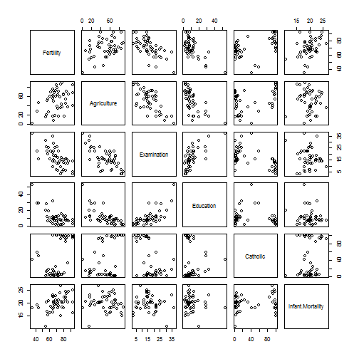
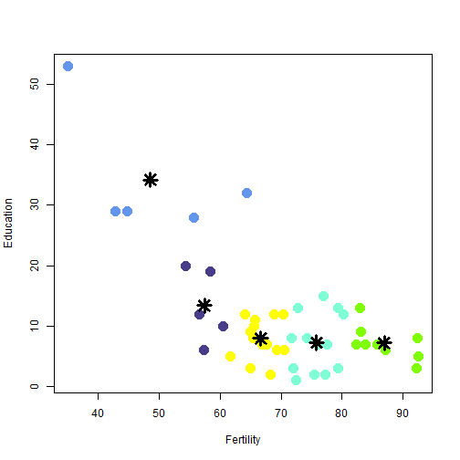

- This application used data with standardized fertility measure and socio-economic indicators for each of 47 French-speaking provinces of Switzerland at about 1888. 
This application allows you to analyze how this indicators are related with detection of claster groups:
Please select in app two indicators and see how they are related
Please Please select a number of clusters that you want to select the data
Let's set indicators: Fertility, Education and number of clusters = 5. 